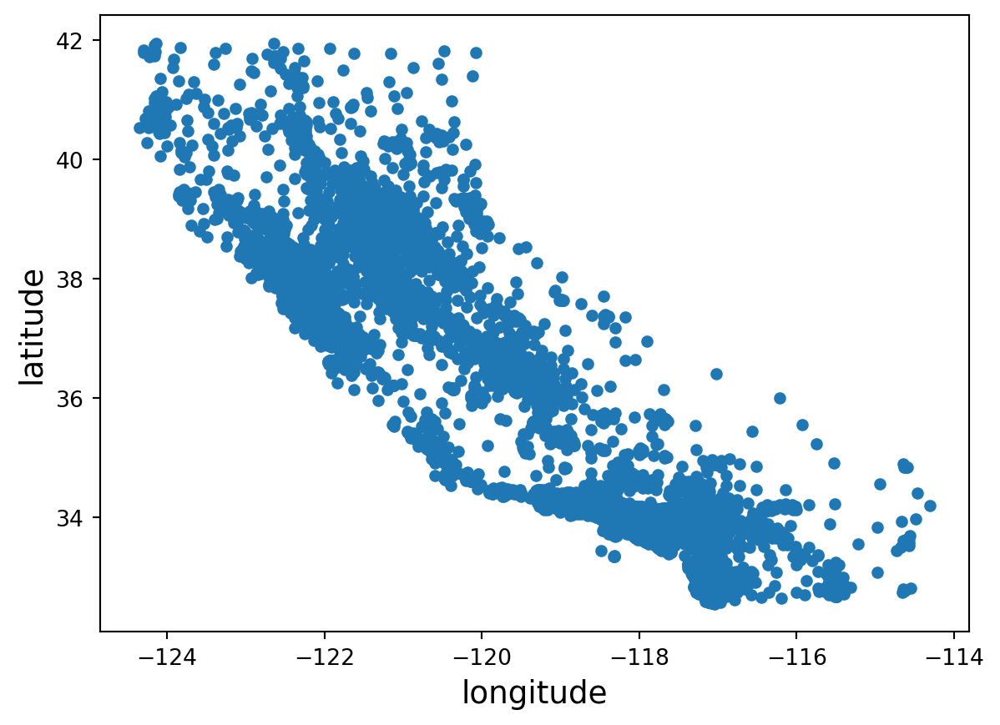

import os
from pathlib import Path
import tarfile
import urllib.request
import matplotlib.pyplot as plt
import numpy as np
import pandas as pd
from sklearn.impute import SimpleImputer
from sklearn.model_selection import StratifiedShuffleSplit, train_test_splitHands-On Machine Learning with Scikit-Learn, Keras, and Tensorflow
Chapter 2 - End-to-end Machine Learning Project
Setup
Load packages
Visuals
Code to save and format figures as high-res PNGs
IMAGES_PATH = Path() / "images" / "end_to_end_project"
IMAGES_PATH.mkdir(parents=True, exist_ok=True)
def save_fig(fig_id, tight_layout=True, fig_extension="png", resolution=300):
path = IMAGES_PATH / f"{fig_id}.{fig_extension}"
if tight_layout:
plt.tight_layout()
plt.savefig(path, format=fig_extension, dpi=resolution)
# matplotlib settings
plt.rc("font", size=14)
plt.rc("axes", labelsize=14, titlesize=14)
plt.rc("legend", fontsize=14)
plt.rc("xtick", labelsize=10)
plt.rc("ytick", labelsize=10)Seeds
Set seed for reproducbility
RANDOM_SEED = 42
np.random.seed(RANDOM_SEED) # set seed for reproducibilityAdditionally, you must set the environment variable PYTHONHASHSEED to "0" before python starts.
Data
Extract and load housing data
def extract_housing_data():
tarball_path = Path("datasets/housing.tgz")
if not tarball_path.is_file():
Path("datasets").mkdir(parents=True, exist_ok=True) # create new dir if does not exist
url = "https://github.com/ageron/data/raw/main/housing.tgz"
urllib.request.urlretrieve(url, tarball_path)
with tarfile.open(tarball_path) as housing_tarball:
housing_tarball.extractall(path = "datasets")
def load_housing_data():
housing_csv_path = Path("datasets/housing/housing.csv")
if not housing_csv_path.is_file():
extract_housing_data()
return pd.read_csv(housing_csv_path)
housing = load_housing_data()View housing data structure
housing.head()| longitude | latitude | housing_median_age | total_rooms | total_bedrooms | population | households | median_income | median_house_value | ocean_proximity | |
|---|---|---|---|---|---|---|---|---|---|---|
| 0 | -122.23 | 37.88 | 41.0 | 880.0 | 129.0 | 322.0 | 126.0 | 8.3252 | 452600.0 | NEAR BAY |
| 1 | -122.22 | 37.86 | 21.0 | 7099.0 | 1106.0 | 2401.0 | 1138.0 | 8.3014 | 358500.0 | NEAR BAY |
| 2 | -122.24 | 37.85 | 52.0 | 1467.0 | 190.0 | 496.0 | 177.0 | 7.2574 | 352100.0 | NEAR BAY |
| 3 | -122.25 | 37.85 | 52.0 | 1274.0 | 235.0 | 558.0 | 219.0 | 5.6431 | 341300.0 | NEAR BAY |
| 4 | -122.25 | 37.85 | 52.0 | 1627.0 | 280.0 | 565.0 | 259.0 | 3.8462 | 342200.0 | NEAR BAY |
housing.info()<class 'pandas.core.frame.DataFrame'>
RangeIndex: 20640 entries, 0 to 20639
Data columns (total 10 columns):
# Column Non-Null Count Dtype
--- ------ -------------- -----
0 longitude 20640 non-null float64
1 latitude 20640 non-null float64
2 housing_median_age 20640 non-null float64
3 total_rooms 20640 non-null float64
4 total_bedrooms 20433 non-null float64
5 population 20640 non-null float64
6 households 20640 non-null float64
7 median_income 20640 non-null float64
8 median_house_value 20640 non-null float64
9 ocean_proximity 20640 non-null object
dtypes: float64(9), object(1)
memory usage: 1.6+ MBhousing.describe()| longitude | latitude | housing_median_age | total_rooms | total_bedrooms | population | households | median_income | median_house_value | |
|---|---|---|---|---|---|---|---|---|---|
| count | 20640.000000 | 20640.000000 | 20640.000000 | 20640.000000 | 20433.000000 | 20640.000000 | 20640.000000 | 20640.000000 | 20640.000000 |
| mean | -119.569704 | 35.631861 | 28.639486 | 2635.763081 | 537.870553 | 1425.476744 | 499.539680 | 3.870671 | 206855.816909 |
| std | 2.003532 | 2.135952 | 12.585558 | 2181.615252 | 421.385070 | 1132.462122 | 382.329753 | 1.899822 | 115395.615874 |
| min | -124.350000 | 32.540000 | 1.000000 | 2.000000 | 1.000000 | 3.000000 | 1.000000 | 0.499900 | 14999.000000 |
| 25% | -121.800000 | 33.930000 | 18.000000 | 1447.750000 | 296.000000 | 787.000000 | 280.000000 | 2.563400 | 119600.000000 |
| 50% | -118.490000 | 34.260000 | 29.000000 | 2127.000000 | 435.000000 | 1166.000000 | 409.000000 | 3.534800 | 179700.000000 |
| 75% | -118.010000 | 37.710000 | 37.000000 | 3148.000000 | 647.000000 | 1725.000000 | 605.000000 | 4.743250 | 264725.000000 |
| max | -114.310000 | 41.950000 | 52.000000 | 39320.000000 | 6445.000000 | 35682.000000 | 6082.000000 | 15.000100 | 500001.000000 |
housing.hist(bins=50, figsize=(12,8))
plt.show()Create test set
Random Sample
def shuffle_and_splt_data(data, test_ratio):
shuffled_indices = np.random.permutation(len(data))
test_set_size = int(len(data) * test_ratio) # number of rows in test data, rounded to nearest integer
test_indices = shuffled_indices[:test_set_size]
train_indices = shuffled_indices[test_set_size:]
return data.iloc[train_indices], data.iloc[test_indices]
# Split into training and test set with sizes 80% and 20%,respectively
train_set, test_set = shuffle_and_splt_data(housing, 0.2)Verify training data size
len(train_set) / len(housing)0.8Verify test data size
len(test_set) / len(housing)0.2Additionally you can use sklearn to create train and test split, supplying the random seed as an argument
train_set, test_set = train_test_split(housing, test_size=0.2, random_state=RANDOM_SEED)Verify training data size
len(train_set) / len(housing)0.8Verify test data size
len(test_set) / len(housing)0.2In order to ensure consistent entries in test set across data refreshes, you will need to store the indexes that are in the test set.
Stratified Sample
Sometimes you will want to perform a train/test split using a stratified sample. Here’s a stratified train/test split using income buckets as our strata.
housing["median_income"].describe()count 20640.000000
mean 3.870671
std 1.899822
min 0.499900
25% 2.563400
50% 3.534800
75% 4.743250
max 15.000100
Name: median_income, dtype: float64Create income bucket column in dataframe
housing["income_bucket"] = pd.cut(
housing["median_income"],
bins=[0.0, 1.5, 3.0, 4.5, 6.0, np.inf],
labels=[1, 2, 3, 4, 5],
)
housing["income_bucket"].value_counts().sort_index().plot.bar(
rot=0, # rotates x-axis labels
grid=True # add gridlines
)
plt.xlabel("Income Bucket")
plt.ylabel("Number of districts")
plt.show()Use sklearn to perform a stratified train/test split 10 times
splitter = StratifiedShuffleSplit(n_splits=10, test_size = 0.2, random_state=RANDOM_SEED)
stratified_splits = []
stratified_split_indices = splitter.split(housing, housing["income_bucket"])
for train_index, test_index in stratified_split_indices:
stratified_train_set_idx = housing.iloc[train_index]
stratified_test_set_idx = housing.iloc[test_index]
stratified_splits.append([stratified_train_set_idx, stratified_test_set_idx])If you wish to use a single straified test/train split, you can simply use train_test_split()
strat_train_set, strat_test_set = train_test_split(
housing,
test_size=0.2,
stratify=housing["income_bucket"],
random_state=RANDOM_SEED,
)Certify the straification resulted in a more balanced test set for income:
def income_bucket_proportions(data):
return data["income_bucket"].value_counts() / len(data)
train_set, test_set = train_test_split(
housing,
test_size=0.2,
random_state=RANDOM_SEED
)
proportion_comparison = pd.DataFrame({
"Overall %": income_bucket_proportions(housing),
"Stratified %": income_bucket_proportions(strat_test_set),
"Random %": income_bucket_proportions(test_set),
})
proportion_comparison.index.name = "Income Bucket"
proportion_comparison["Stratified Error %"] = proportion_comparison["Stratified %"] / proportion_comparison["Overall %"] - 1
proportion_comparison["Random Error %"] = proportion_comparison["Random %"] / proportion_comparison["Overall %"] - 1
(proportion_comparison * 100).round(2)| Overall % | Stratified % | Random % | Stratified Error % | Random Error % | |
|---|---|---|---|---|---|
| Income Bucket | |||||
| 3 | 35.06 | 35.05 | 34.52 | -0.01 | -1.53 |
| 2 | 31.88 | 31.88 | 30.74 | -0.02 | -3.59 |
| 4 | 17.63 | 17.64 | 18.41 | 0.03 | 4.42 |
| 5 | 11.44 | 11.43 | 12.09 | -0.08 | 5.63 |
| 1 | 3.98 | 4.00 | 4.24 | 0.36 | 6.45 |
EDA
Data Visualization
Creating a scatter plot of the latitudes and longitudes tells us where these district are located in relation to one another.
housing.plot("longitude", "latitude", "scatter")
plt.show()
We observe that our data spans California. Applying an alpha to the plot will better show the districts’ density.
housing.plot("longitude", "latitude", "scatter", alpha=0.2)
plt.show()Additionally, we can plot these points and add layers for population and median housing price
housing.plot(
kind="scatter",
x="longitude",
y="latitude",
grid=True,
s=housing["population"] / 100, # size of points
c="median_house_value", # color of points
cmap="viridis", # colormap to use for color layer
colorbar=True,
alpha=0.5,
legend=True,
figsize=(10,7)
)
plt.show()This we are using location data, we can plot this on a map image
filename = "california.png"
if not (IMAGES_PATH / filename).is_file():
img_url_root = "https://github.com/ageron/handson-ml3/raw/main/"
img_url = img_url_root + "images/end_to_end_project/" + filename
urllib.request.urlretrieve(img_url, IMAGES_PATH / filename)
housing.plot(
kind="scatter",
x="longitude",
y="latitude",
grid=False,
s=housing["population"] / 100, # size of points
c="median_house_value", # color of points
cmap="viridis", # colormap to use for color layer
colorbar=True,
alpha=0.5,
legend=True,
figsize=(10,7)
)
axis_limits = -124.55, -113.95, 32.45, 42.05
plt.axis(axis_limits)
california_img = plt.imread(IMAGES_PATH / filename)
plt.imshow(california_img, extent=axis_limits)
plt.show()Correlation
We can return a correlation matrix and look at correlations for our target variable.
corr_matrix = housing.corr(numeric_only=True)
corr_matrix["median_house_value"].sort_values(ascending=False)median_house_value 1.000000
median_income 0.688075
total_rooms 0.134153
housing_median_age 0.105623
households 0.065843
total_bedrooms 0.049686
population -0.024650
longitude -0.045967
latitude -0.144160
Name: median_house_value, dtype: float64Also, pandas comes with the ability to create scatter plots for all variables of interest.
We observe strong correlations among variables concerning house size, number, and count of rooms. We observe weak correlation between housing_median_age and the other variables
scatter_columns = ["housing_median_age", "total_rooms", "total_bedrooms", "population", "households", "median_income", "median_house_value", "ocean_proximity"]
pd.plotting.scatter_matrix(housing[scatter_columns], figsize=(12, 8))
plt.show()Feature Engineering
We can combine columns into new columns for interaction effects.
housing["rooms_per_house"] = housing["total_rooms"] / housing["households"]
housing["bedrooms_ratio"] = housing["total_bedrooms"] / housing["total_rooms"]
housing["people_per_house"] = housing["population"] / housing["households"]When we re-run the correlation matrix, we observe that the derived columns can provide bettwe correlations to the target variable
corr_matrix = housing.corr(numeric_only=True)
corr_matrix["median_house_value"].sort_values(ascending=False)median_house_value 1.000000
median_income 0.688075
rooms_per_house 0.151948
total_rooms 0.134153
housing_median_age 0.105623
households 0.065843
total_bedrooms 0.049686
people_per_house -0.023737
population -0.024650
longitude -0.045967
latitude -0.144160
bedrooms_ratio -0.255880
Name: median_house_value, dtype: float64Data Prep
Functions are the preferred way to clean data for ML. Functionalizi8ng the data cleaning process allows you to reproduce your results easily and apply the same cleaning across different projects.
Clean training data and labels
First, we want to remove the target variable from our training set and store it in its own object.
TARGET_VARIABLE = "median_house_value"
housing = strat_train_set.drop(TARGET_VARIABLE, axis=1) # drops column
housing_labels = strat_test_set[TARGET_VARIABLE].copy()Handle Missing Data
TO handle missing data, there are three options: - Remove the rows with missing values (pd.DataFrame.dropna()) - Remove attributes with missingness (pd.DataFrame.drop()) - Impute the missing values
Imputation is generally preferred, so as to avoid losing information. We can use scikit-learn for imputation
# available strategies: 'mean', 'median', 'most_frequent', 'constant' (using provided 'fill_value'), or Callable
imputer = SimpleImputer(strategy="median")
housing_numeric_columns = housing.select_dtypes(include=[np.number])
imputer.fit(housing_numeric_columns)SimpleImputer(strategy='median')In a Jupyter environment, please rerun this cell to show the HTML representation or trust the notebook.
On GitHub, the HTML representation is unable to render, please try loading this page with nbviewer.org.
SimpleImputer(strategy='median')
The imputer calcualtes the specified statistics and stores them in the statistics_ attribute.
imputer.statistics_array([-118.51 , 34.26 , 29. , 2125. , 434. , 1167. ,
408. , 3.5385])housing_numeric_columns.median().valuesarray([-118.51 , 34.26 , 29. , 2125. , 434. , 1167. ,
408. , 3.5385])To apply the “fitted” imputer to the data, use the transform method.
X = imputer.transform(housing_numeric_columns)